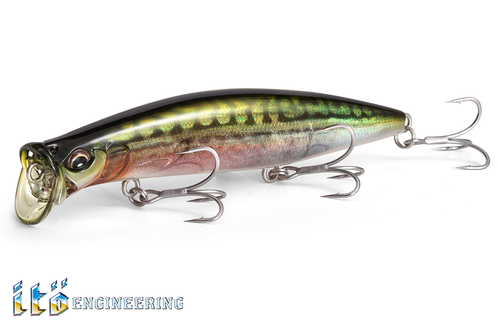
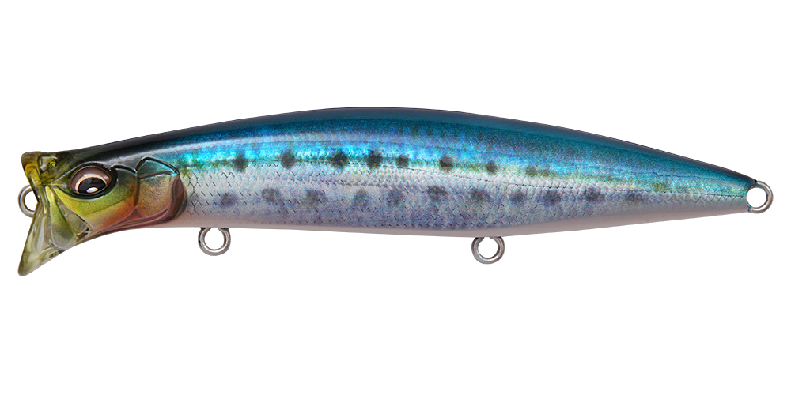
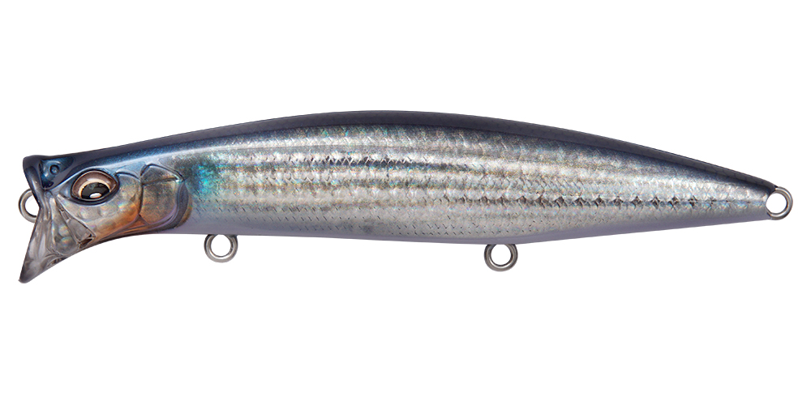
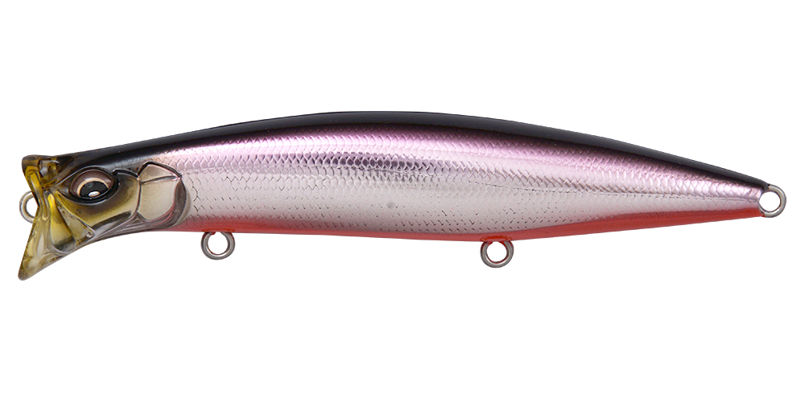
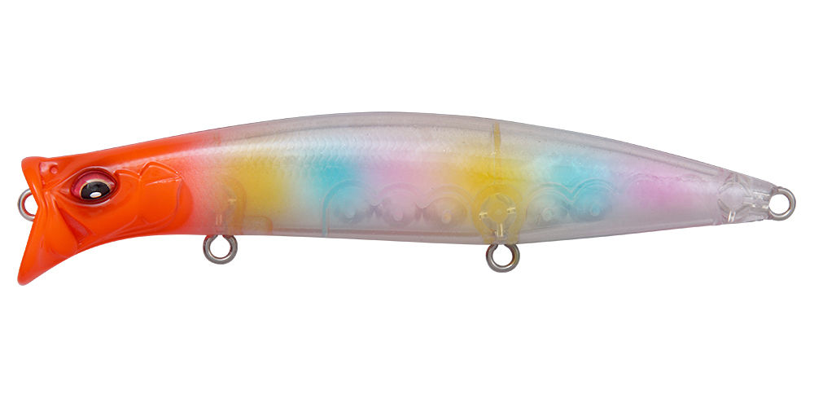

キリンジ120
（KIRINJI 120）
キリンジ120はMegabass（メガバス）のウェイクベイトです。
ITO独自の「4 INTAKE 4 OUT」構造（PAT.P）を搭載したスペシャルウェイクベイトで、水流の圧力を増やした大型ウォータースルーダクトにより、120mmのロングボディでもキレのあるウルトラハイピッチロールを出します。シャローランナーやペンシルポッパーとしても使える、キリンジシリーズの最大サイズです。

画像出典:Megabass公式HP
スペック
- メーカー
- Megabass（メガバス）
- タイプ
- ウェイクベイト（フローティング）
- 全長
- 120mm
- 自重
- 21g
- レンジ
- 0〜0.1m
- フック
- #5×3
- アクション
- ウルトラハイピッチロール（ウォブンロール）
- ターゲット
- シーバス
- 価格
- 1,980円（税別）
▼今すぐチェック

キリンジ120の特徴
引き波・シャローランナー・ペンシルポッパーの3役をこなすウェイクベイト
-
大型ウォータースルーダクト
「4 INTAKE 4 OUT」構造に、水流の圧力を増やした大型ダクトを組み合わせ、ロングボディでもキレのあるウェイクアクションを実現。軽い巻き心地でウルトラハイピッチなロールを出します。
-
水深10cmのシャローランナーにもなる
浮力を抑えたセッティングで、ロッドティップを水面近くに構えて巻くと水深10cmほどを引くシャローランナーとしても使えます。ベイトの浮き具合に合わせてレンジを選べます。
-
ペンシルポッパーとしても使える
ロッドでアクションを付ければ「バブル＆スプラッシュ」や「バブルダイブ＆リトリーブ」など、ペンシルポッパーのような誘いも可能。ジャンルの枠を超えて使い分けられます。
キリンジ120の使い方
基本はただ巻きで、水面に引き波を立てながら泳がせるウェイクベイトの使い方。ロッドを立て気味にすると水面、ティップを水面近くに下げると水深10cmほどのシャローランナーになります。
反応がないときは、ロッドで軽くあおってバブルやスプラッシュを出し、ペンシルポッパーのようにアクティブに誘ってみましょう。
キリンジ120の得意な状況
水面を意識した魚を狙うとき。キリンジ90より大きいシルエットと飛距離があるので、ボラやコノシロなど大きめのベイトが表層にいる状況や、広いエリアを探りたいときに向いています。
ワンポイント
キリンジは70・90・120の3サイズ。ベイトが小さいときは70、標準は90、ベイトが大きいときや飛距離が欲しいときは120と、ベイトサイズで使い分けましょう。
キリンジシリーズの使い分け
| モデル | 全長／自重 | 得意な場面 |
|---|---|---|
| キリンジ70 | 70mm／7g | レンジ0〜0.1m。小型ベイトやライトタックルに |
| キリンジ90 | 90mm／14.5g | 飛距離と存在感のある基準サイズ |
| キリンジ120 | 120mm／21g | 大型ベイト・広範囲サーチに（本記事のモデル） |
どれも同じウォータースルー機構のウェイクベイト。ベイトの大きさとタックルに合わせてサイズを選びましょう。
人気カラー
公式ラインナップから4色を紹介します（カラー名は公式の表記のまま）。

FA IWASHIファインアートフィニッシュのイワシカラー。イワシが入ったときのナチュラル系に。

FA BORAボラを意識したファインアートフィニッシュ。ボラがベイトの河川や港湾に。

M KATAKUCHI RBカタクチイワシを意識したカラー。カタクチが入った港湾やサーフに。

GLX CANDY RED HEADホロ系のレッドヘッド。濁りやローライトでアピールしたいときに。
画像出典:Megabass公式HP
キリンジ120に似ているルアー
-
 キリンジ90
メガバス
詳細はこちら＞
キリンジ90
メガバス
詳細はこちら＞
全長90mm・自重14.5gの同シリーズ。ベイトがひと回り小さいときに。
-
 コモモII
ima
詳細はこちら＞
コモモII
ima
詳細はこちら＞
全長110mm・自重15gのフローティングミノー。水面直下0〜20cmを、スネーキングアクションでかき回したいときに。
-
 カゲロウ124F
メガバス
詳細はこちら＞
カゲロウ124F
メガバス
詳細はこちら＞
全長124mm・自重22gのシャローランナー。同じ表層レンジを、引き波ではなくロールで見せたいときに。